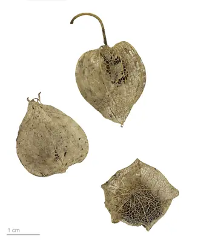

pranet · 出典付きの植物図鑑
ヒメセンナリホオズキ
Physalis pubescens L. · Solanaceae

Physalis pubescens is a species of flowering plant in the nightshade family known by many common names, including husk tomato, low ground-cherry and hairy groundcherry in English, and muyaca and capulí in Spanish. It is native from Brazil, but also found in southern half of the United States, Mexico, Central and much of South America. It can be found elsewhere as an introduced species and sometimes a weed. It can grow in many types of habitat, including disturbed areas. This is an annual herb producing a glandular, densely hairy stem up to about 60 cm (24 in) in maximum height from a taproot. The oval or heart-shaped leaves are 3–9 cm (1.2–3.5 in) long and have smooth or toothed edges. The flowers blooming from the leaf axils are bell-shaped and about a centimeter long. They are yellow with five dark spots in the throats, and have five stamens tipped with blue anthers. The five-lobed calyx of sepals at the base of the flower enlarges as the fruit develops, becoming an inflated, ribbed, lanternlike structure 2–4 cm (0.79–1.57 in) long which contains the berry.
出典: Wikipedia (en): Physalis pubescens · CC BY-SA 4.0
異名: Alicabon barbadense (Jacq.) Raf., Alkekengi procumbens Moench, Boberella pubescens (L.) E.H.L.Krause, Physalis barbadensis Jacq., Physalis barbadensis Lam., Physalis floridana Rydb., Physalis heterophylla Colla, Physalis hirsuta Dunal, Physalis hirsuta M.Martens & Galeotti, Physalis hygrophila Mart., Physalis hylophila Standl., Physalis latiphysa Waterf., Physalis miraflorensis Dunal, Physalis neesiana Sendtn., Physalis obscura Michx., Physalis turbinata Medik., Physalis villosa Mill.
同定や利用は自己責任でお願いします。この図鑑だけを根拠に野生の植物を食べないでください。
出典
- 学名: World Flora Online Plant List 2026-06 · CC0 1.0
- 名前: Wikipedia の記事名と Wikidata · CC0 1.0（Wikidata）。記事名は事実
- 説明: Wikipedia (en): Physalis pubescens · CC BY-SA 4.0
- 食用・毒性: World Checklist of Useful Plant Species (Diazgranados et al. 2020, RBG Kew) · CC BY 4.0
- 分布: World Checklist of Vascular Plants (WCVP), RBG Kew, version 2026-06-04 · CC BY 3.0
このページは pranet のデータから自動生成しています。コードは MIT、データは項目ごとのライセンス（説明）。